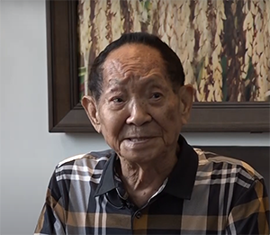
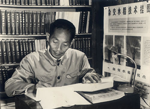
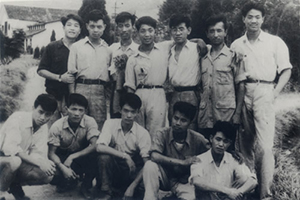

袁隆平
袁隆平（1929年8月13日－2021年5月22日），男，汉族，江西德安人，中国杂交水稻育种专家，中国工程院院士和美国科学院外籍院士， 于1960年代至1970年代对杂交水稻品种的研究，令中国大陆和世界各地的粮产增加，被誉为“杂交水稻之父”
生活照


个人荣誉
| 获奖事件 | 获奖名称 | 授奖部门 |
|---|---|---|
| 1981年6月 | 国家特等发明奖 | 中华人民共和国国家科学技术委员会 |
| 1985年10月 | 创造与发明金质奖章（杰出发明家） | 世界知识产权组织 |
| 1987年11月 | 科学奖 | 联合国教科文组织 |
| 1988年3月 | 农学与营养奖 | 英国让克基金会 |
| 1991年11月 | 国家科技进步三等奖 | 中华人民共和国国家科学技术委员会 |
| 1993年4月 | 拯救世界饥饿（研究）荣誉奖 | 美国费因斯特基金会 |
| 1994年12月 | 何梁何利基金奖科学与技术进步奖 | 何梁何利基金会 |
| 1995年10月 | 粮食安全保障荣誉奖 | 联合国粮农组织 |
| 1996年5月 | 日经亚洲奖 | 日本经济新闻社 |
| 1996年12月 | 国家科技进步三等奖 | 中华人民共和国国家科学技术委员会 |
| 1997年8月 | 杂种优势利用杰出先驱科学家称号 | 墨西哥作物遗传与杂种优势利用国际讨论会 |
| 1998年11月 | 越光国际水稻奖 | 日本越光国际水稻奖事务局 |
| 2001年2月 | 首届国家最高科学技术奖 | 中华人民共和国国务院 |
| 2001年8月 | 拉蒙·麦格塞塞奖 | 菲律宾拉蒙·麦格赛赛基金会 |
| 2004年5月 | 沃尔夫农业奖 | 沃尔夫基金会 |
| 2004年10月 | 世界粮食奖 | 世界粮食奖基金会 |
| 2005年2月 | 感动中国2004年度人物 | 中央广播电视总台 |
| 2010年3月 | 法国农业成就勋章 | 法国农业部 |
| 2016年 | 吕志和奖 - 持续发展奖 | 吕志和奖有限公司 |
| 2019年 | 共和国勋章 | 中华人民共和国主席 |
早年科研
-
1953年，袁隆平自西南农学院（现西南大学）毕业，分配到湘西黔阳县安江农业学校任教。1957年反右运动时，
由于袁隆平父亲曾在冯玉祥的第二军团担任上校秘书，袁隆平于是被划为“中右”。三年困难时期大饥荒，1960年袁隆平
在校门外看到两具饿殍，深受刺激，决意研究粮产。
-
1960年7月，他在农校试验田中意外发现一株特殊性状的水稻。他利用该株水稻试种，发现其子代有不同性质。
因为水稻是自花授粉的，不会出现性状分离，所以他推论该为天然杂交水稻。
随后他把雌雄同蕊的水稻雄花人工去除，授以另一个品种的花粉，尝试产生杂交品种。
-
1964年7月5日，他在试验稻田中找到一株“天然雄性不育株”，经人工授粉，结出了数
百粒第一代雄性不育株种子。1965年7月，他又在14000多个稻穗中逐穗检查到6株不育株，
并在此后两年播种中，共有4株成功繁殖了1～2代。其研究彻底推翻由传统经典理论米丘林、
李森科的“无性杂交”学说，并推论水稻亦有杂交优势。通过培育雄性不育系、雄性不育保持
系和雄性不育恢复系的三系法途径来培育杂交水稻，可以大幅度提高水稻产量。
家世
袁隆平的祖先大约在明代定居江西德安县南部的青竹畈务农。清雍正年间， 袁家确定了“大茂昌繁盛，兴隆定有期，敬承先贤业，常遇圣明时”二十字排辈。 袁隆平曾祖父袁繁仁与繁礼、繁智兄弟一代人弃农务商，在1889年离开青竹畈，移居德安县城。 19世纪初年，袁家人口繁盛，分为五房。袁隆平的祖父袁盛鉴（1873年－1933年[16]）为二房 ，他在德安县北门新建宅院，称为颐园。颐园建筑大多毁于抗日战争，战后仅存的私塾约在1986年拆除。 袁盛鉴第一次参加乡试就考中举人，后来毕业于江西地方自治研究所。1912年，九江五县同乡会推举袁盛 鉴为知事记室。二次革命期间，袁盛鉴被任命为中国国民党南九支部部长，后来担任过江西省议会议员。 之后，袁盛鉴回到德安，出任县高等小学校长、县农会会长。国民革命军北伐开始后，袁盛鉴赴海南岛任职， 曾担任广东琼崖行政委员公署秘书、文昌县县长。由于听不懂海南闽语，难以工作，他辞官回乡，曾出任江西平民医院院长。
袁隆平出身贫穷，他的父亲袁兴烈（1905年－1975年1月15日） 毕业于国立东南大学中文系（即后来的国立中央大学） ，毕业后曾任县立高等小学校长、督学。母亲华静（1902 年－1989年9月15日）是江苏镇江人，本名华国林，自幼在英国教会学校读书， 高中毕业后在安徽芜湖教小学。据袁隆平自述，华静在教书期间结识了尚 在国立东南大学读书的袁兴烈，两人后来结了婚。有传记称，华静与袁兴烈相恋、结婚时两 人分别是同一所小学的教师和校长。生下长子袁隆津后，华静辞职，专注家务。袁隆平出生时，袁兴烈的职务是平汉铁路局秘书。